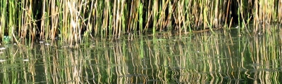

Welcome
Nal Sarovar is a Bird Sanctuary, spread in the area of 120.82-sq-km Lake, a serene marshland with shallow waters (4-5 ft) which contains 36 small islands. Nalsarovar-Ahmedabad distance is about 60 km located near Sanand Village, in Gujarat. Mainly inhabited by migratory birds as their wintering ground, Nalsarovar wetland is the largest wetland bird sanctuary in Gujarat, and one of the largest in India. Nalsarovar is a Bird Sanctuary since April 1969 and Nalsarovar is a Ramsar site since 24 September 2012.
 More than 200 types of birds mainly waterfowl inhabit this lake and come from as far as Siberia. Nalsarovar in Gujarat is a bird watcher’s paradise, one can find rosy pelicans, lesser and greater flamingos, crakes, brahminy ducks, purple moorhen, herons, white storks, various species of bitterns, grebes etc in the lake. Best time to visit Nalsarovar is in winter between November to February. However, migratory birds starts arriving in October and stay until April but their population reaches its peak in mid winter. Best time to see the birds is early in the morning and in the evening. The locals have maintained strict cleanliness policy and one can find the water so clean that u can clearly see the sheval plants grown inside the lake. Sheval plant is food to the birds as well as the fish inside the lake.
Boat ride includes journey from start point to Dhrabla Island (BET as called by locals) and return. On island, one can enjoy view of the lake from the watchtower. There are small huts where kathiyawadi thali (consist of three sabzi, Bajra roti, jaggery, makkhan & chatni) is served by local vendors. All the vendors sell similar food at same rate i.e. Rs. 150/thali, in rush hours to manage crowd, your boatman will take you to a specific hut assigned to him. The local vendors are very humble and good at hospitality. If you are a regular visitor you can request the menu of your own wish on prior notification of your arrival to the vendor.